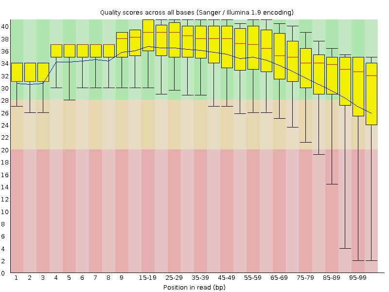
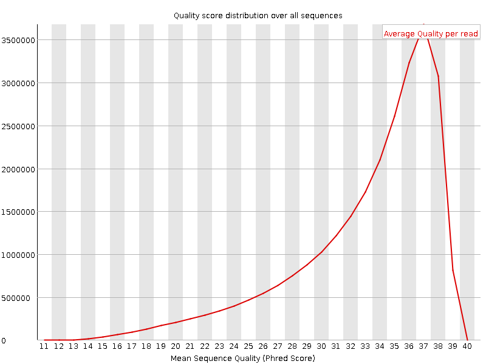
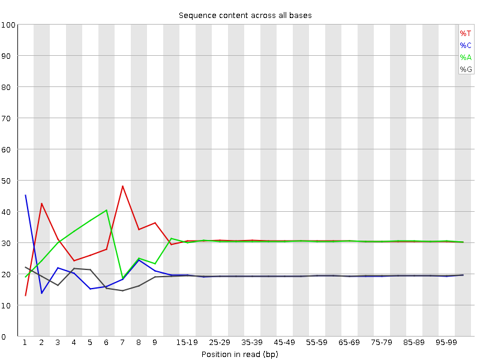
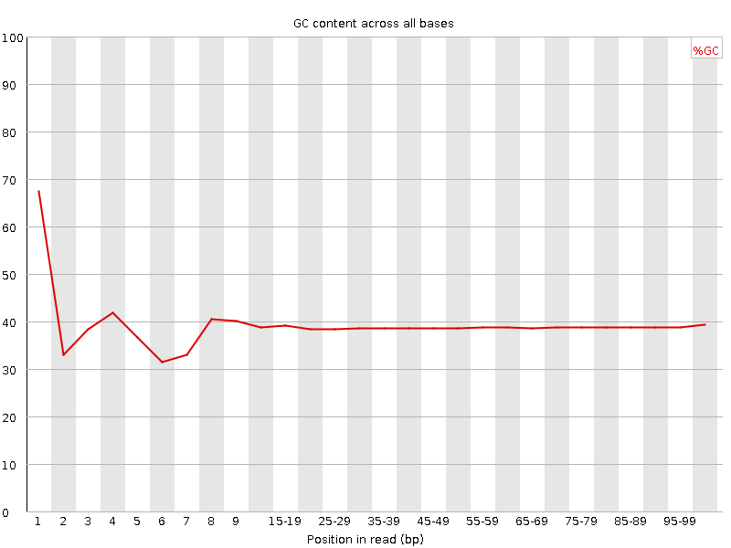
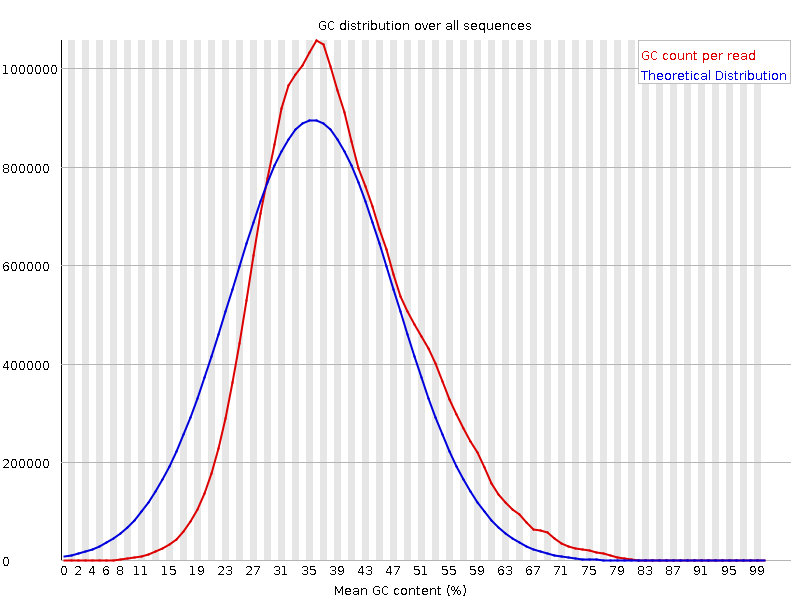
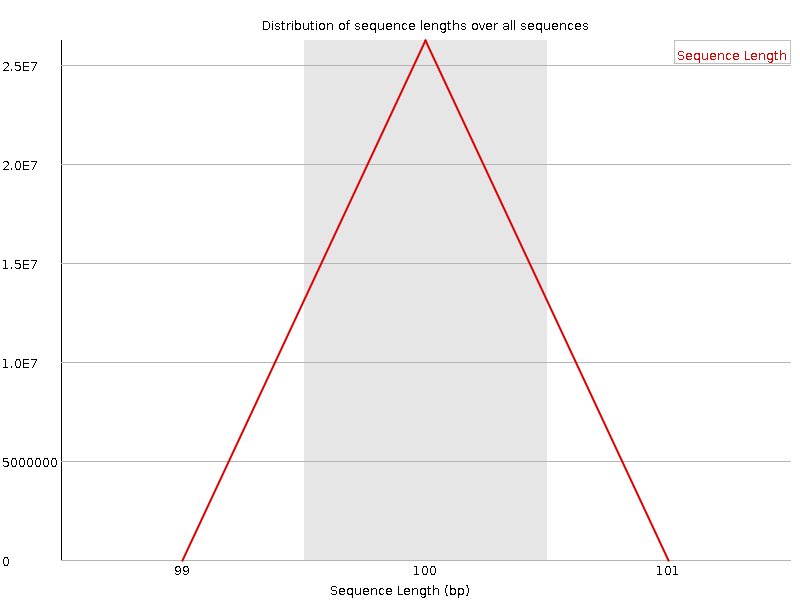
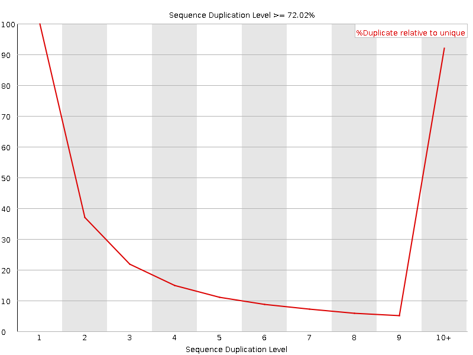
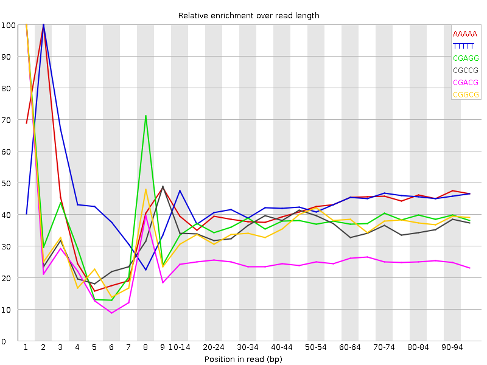

![[OK]](Icons/tick.png) Basic Statistics
Basic Statistics
| Measure | Value |
|---|---|
| Filename | c6.2.fq |
| File type | Conventional base calls |
| Encoding | Sanger / Illumina 1.9 |
| Total Sequences | 26255029 |
| Filtered Sequences | 0 |
| Sequence length | 100 |
| %GC | 38 |
Per base sequence quality

Per sequence quality scores

![[FAIL]](Icons/error.png) Per base sequence content
Per base sequence content

Per base GC content

![[WARN]](Icons/warning.png) Per sequence GC content
Per sequence GC content

Per base N content

Sequence Length Distribution

Sequence Duplication Levels

Overrepresented sequences
No overrepresented sequences
Kmer Content

| Sequence | Count | Obs/Exp Overall | Obs/Exp Max | Max Obs/Exp Position |
|---|---|---|---|---|
| AAAAA | 16090805 | 2.4678414 | 5.8575125 | 2 |
| TTTTT | 16384610 | 2.4042108 | 5.5017614 | 2 |
| CGAGG | 2201720 | 2.025713 | 5.3849487 | 1 |
| CGCCG | 1430260 | 2.005521 | 5.5880933 | 1 |
| CGACG | 2189940 | 1.9845573 | 7.847863 | 1 |
| CGGCG | 1327840 | 1.8903506 | 5.261245 | 1 |
| CTTCT | 5007685 | 1.7906729 | 5.313487 | 1 |
| CGCGG | 1209625 | 1.7220564 | 5.424757 | 1 |
| TCGAG | 2939600 | 1.7064683 | 5.082002 | 7 |
| CTCGA | 2981895 | 1.7049747 | 9.078165 | 1 |
| CGCGA | 1804215 | 1.6350074 | 5.9139957 | 1 |
| CTTCC | 2867415 | 1.6006309 | 5.3182454 | 1 |
| CGAGA | 2716920 | 1.5912099 | 5.4893527 | 1 |
| CTGGA | 2702025 | 1.5685536 | 6.693842 | 1 |
| ATCGA | 4185090 | 1.5464989 | 5.5129666 | 6 |
| CTCCA | 2745215 | 1.5460289 | 6.8681564 | 1 |
| CTTTT | 6727785 | 1.5410969 | 6.701829 | 1 |
| CGATC | 2695065 | 1.5409724 | 5.2535424 | 4 |
| CAAAA | 6410805 | 1.5213628 | 5.044785 | 1 |
| CGCCA | 1704165 | 1.5211031 | 5.459304 | 1 |
| CGAAG | 2532050 | 1.4829377 | 5.517051 | 1 |
| CTTCG | 2609255 | 1.4787732 | 6.6351757 | 1 |
| CTCGT | 2589110 | 1.467356 | 7.656707 | 1 |
| CTCGC | 1594845 | 1.410993 | 6.6314774 | 1 |
| CTCGG | 1554650 | 1.3964436 | 8.489239 | 1 |
| CTTCA | 3793055 | 1.3683871 | 5.6745844 | 1 |
| CTGGC | 1516115 | 1.3618301 | 5.0660605 | 1 |
| CGAAA | 3580900 | 1.334989 | 5.851663 | 1 |
| GAATC | 3470930 | 1.2825984 | 5.324132 | 4 |
| CTTGG | 2164925 | 1.2456967 | 6.07177 | 1 |
| CTTTG | 3392385 | 1.2315974 | 5.5632033 | 1 |
| CTTGA | 3332005 | 1.2204216 | 5.6548643 | 1 |